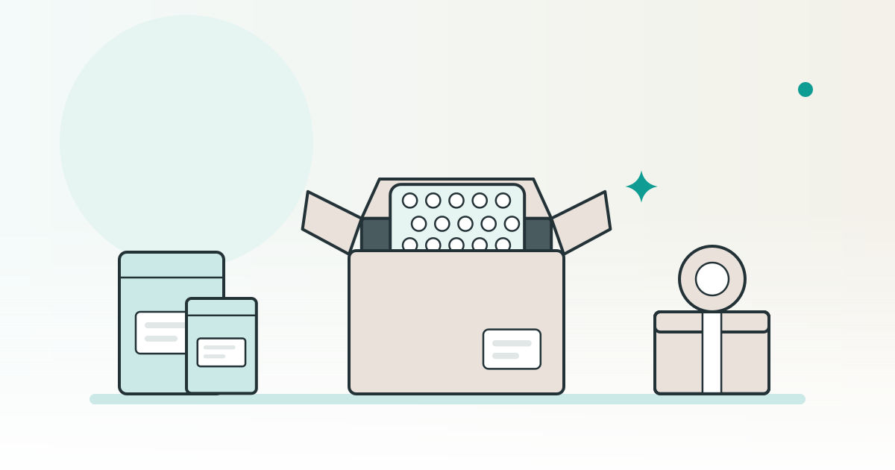

SHOPKIT コラム
ネットショップの梱包資材の選び方箱・袋・緩衝材と費用の見方

ネットショップの梱包作業で、注文のたびに箱や袋を選び直していませんか。先に商品の寸法と送り方を整理し、資材の組み合わせを決めてみましょう。この記事では、選ぶ前の確認項目と、使った量・費用・包み方を残す方法を紹介します。
この記事は、完成品のネットショップを販売している SHOPKIT が書いています。
梱包資材は、商品の大きさと送り方から選ぶ
最初に、商品を包む前の寸法と重さを記録します。本体だけでなく、一緒に届ける付属品や内袋も含めて、何を入れる荷物かを決めましょう。
資材の販売元には、箱の内側の寸法と外側の寸法、袋の使える範囲を確かめます。商品が入るかを見る寸法と、荷物として送るときの寸法は、別の欄に残してください。
利用する配送方法については、梱包後の寸法・重さ・内容品の条件を配送会社の最新の案内で照らします。箱や袋の呼び名だけで、利用できると判断しないようにしましょう。
送料を決める作業は、資材を選ぶ作業と分けて進めます。
関連：ネットショップの送料の決め方｜発送方法・梱包と先に伝えること
箱・袋・緩衝材は、商品ごとに使い分ける
資材は、商品を入れた状態で候補を比べましょう。次の表は、選ぶ際に確かめるための項目で、材質ごとの性能を保証するものではありません。
| 候補 | 入れた状態で見る所 | 販売元へ聞くこと |
|---|---|---|
| 箱 | ふたが閉まり、商品や付属品に無理な力がかかっていないか | 内寸・外寸、材質、組み立て方、想定する使い方 |
| 袋 | 封をする余白があり、角や突起で袋を傷めていないか | 使える寸法、厚み、封の方法、対応する内容物 |
| 緩衝材 | 保護したい面とすき間を分け、入れる場所や量を説明できるか | 材質、使い方、接触を避ける素材や保管上の注意 |
薄い服と角のある雑貨など、形や扱い方が違う商品は、同じ包み方にそろえる前に別々に確かめます。割れ物については、商品ごとの梱包を試して届いた状態を調べる工程も分けて用意してください。
関連：雑貨屋のネットショップを開くには｜品ぞろえと商品の表示・安全の確かめ方
資材の費用は、使った量と購入記録から出す
まず、箱・袋・緩衝材・テープなど、荷物に使う資材の名前と購入単位を書き出します。購入時の金額と数量から同じ単位の単価を出し、その荷物に使った量を掛けて足すと、資材分の費用を整理できます。
巻き物なら長さ、まとめ売りなら枚数というように、単価の単位と使用量の単位をそろえましょう。使い直して捨てた分は別に記録し、包み方を見直す材料にします。
注文を複数の荷物に分ける場合は、荷物ごとの資材費を合わせて注文単位で見ます。注文数と荷物の数を同じものとして数えないようにしてください。
資材を買う際の送料も、資材本体の金額と分けて記録します。注文へどう配分したかを残しておくと、購入時期や購入量が変わったときに同じ方法で比べられます。
ここで計算するのは資材分です。お客様へ送る送料や梱包する人の作業分も含めて考える場合は、それぞれ別の欄に置きましょう。
開けたときの見た目と、ごみの少なさを考える
おしゃれな梱包にしたいときも、最初に商品を取り出す流れを見てみましょう。色を増やす前に、包み紙の向き、テープを貼る位置、開け口の案内をそろえる方法があります。
飾りや包む層を足すときは、その目的をメモします。見た目のために足した物と、商品を守るために必要と考えた物を分け、減らせるかを検討してください。減らした後も商品の状態を確かめ、見た目だけで包み方を決めないようにします。
環境省の容器包装リサイクル関連の案内には、制度の説明や法令、資料を調べる入口があります。
資材の量を減らす工夫と、自店が制度上どの扱いになるかの確認は分けて進めましょう。事業の規模や使う資材を整理して、原典や担当窓口で確かめてください。
毎回同じに包めるよう、資材と手順をまとめる
採用する資材が決まったら、商品名・お店の管理番号と組み合わせて記録します。同じ商品でも、単品で送る場合と複数を合わせて送る場合は、荷物の条件を分けて書いてください。
- 資材を特定する：資材名、購入先の管理番号、寸法、使う量を残します。似た箱を取り違えないための呼び名も決めましょう。
- 包む順を残す：商品を置く向き、使う資材の順番、封をする位置を写真や短い文で記録します。
- 採用した版を決める：確かめた日と対象商品を記し、変更した理由を残します。変更後は手順と資材一覧を一緒に直します。
記録を見て自分で包み直し、途中で迷った所を書き足します。日々の作業全体の整理は別の記事で扱っています。
関連：ネットショップを一人で運営するには｜毎日の作業と、続けるための決めごと
お店を買って始めるときに、梱包の決まりを確かめる
お店を購入する場合も、受け取る資料の中に梱包の説明があるかを確かめましょう。商品ごとの指定資材、資材を用意する人、包む人、変更時に聞く相手を質問として残します。
箱や袋そのものを受け取れるのか、購入先の情報だけなのかも分けて聞いてください。実物の資材や商品別の包み方が付くかどうかを、資料の名前だけから判断しないことが大切です。
説明がある場合は、自分が届ける商品と送り方に合っているかを照らします。足りない条件を確認し、使う資材と手順が対応する形に整えてから始めましょう。
よくある質問
ネットショップの梱包で、箱はどの商品も同じにできますか？
商品の寸法と付属品、利用する送り方をそろえてから、同じ箱で送れるかを確かめましょう。形や扱い方が違う商品は、別々に見ることを勧めます。
荷物1つ分の梱包資材の費用は、どのように出せばよいですか？
購入した資材の単価と使用量を同じ単位でそろえ、荷物ごとに足して整理します。資材購入時の送料や、お客様へ送る送料は、資材本体と分けて記録してください。
ネットショップの荷物を包むとき、飾りは何を基準に選べばよいですか？
開け口や商品を取り出す順を見たうえで、飾る目的を決めましょう。使う色や包み方をそろえ、足す物と減らせる物を検討します。
※ 当事者の表示は、2026年10月15日時点のサービスページの記載に基づきます。公的資料は2026年10月27日に確認しました。